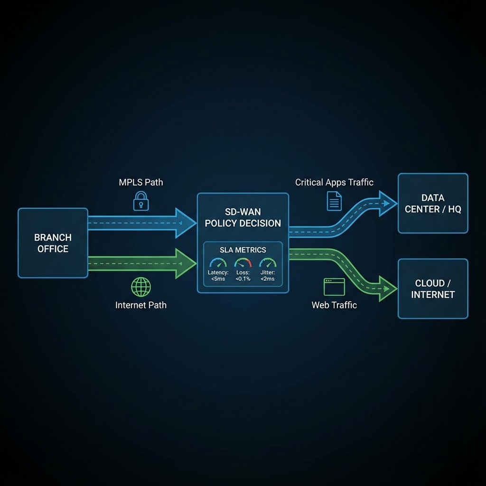

Chapter 8
Centralized Data Policies
Learning Objectives
- Memahami centralized data policy vs control policy
- Mengkonfigurasi traffic steering berdasarkan application
- Mengimplementasikan DSCP marking dan re-marking
- Menggunakan VPN membership control

Gambar 8.1 - Traffic steering berdasarkan aplikasi ke berbagai WAN transport
Data Policy vs Control Policy
| Aspect | Control Policy | Data Policy |
|---|---|---|
| Operates On | OMP routes (control plane) | Actual traffic (data plane) |
| Applied At | vSmart only | vSmart → pushed to edges |
| Match Criteria | Route attributes | Packet headers, applications |
| Use Case | Route filtering, topology | Traffic steering, QoS marking |
Traffic Steering
Data policies dapat mengarahkan traffic ke specific paths berdasarkan various criteria.
Steering Options:
- TLOC-based: Steer ke specific transport (MPLS, Internet)
- Color-based: Steer berdasarkan WAN link color
- Service-based: Redirect ke service node
- Local-based: Direct Internet Access (DIA)
Data Policy Example
sequence 10
match
app-list critical-apps
action accept
set
local-tloc color mpls
# Steer critical apps to MPLS
sequence 20
match
app-list web-browsing
action accept
set
local-tloc color biz-internet
# Steer web to InternetDSCP Marking
Data policies dapat set atau re-mark DSCP values untuk QoS treatment.
| DSCP Value | Per-Hop Behavior | Typical Use |
|---|---|---|
| 46 (EF) | Expedited Forwarding | Voice, real-time |
| 34 (AF41) | Assured Forwarding | Video conferencing |
| 26 (AF31) | Assured Forwarding | Mission critical |
| 0 (BE) | Best Effort | Default traffic |
End-to-End QoS
DSCP marking di SD-WAN overlay harus aligned dengan underlay QoS policies untuk effective treatment.